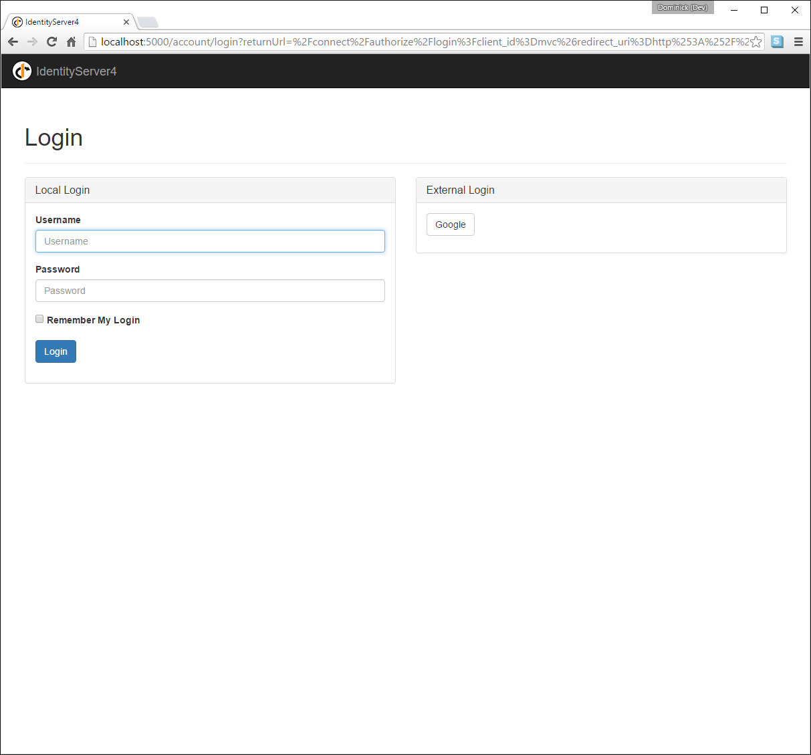
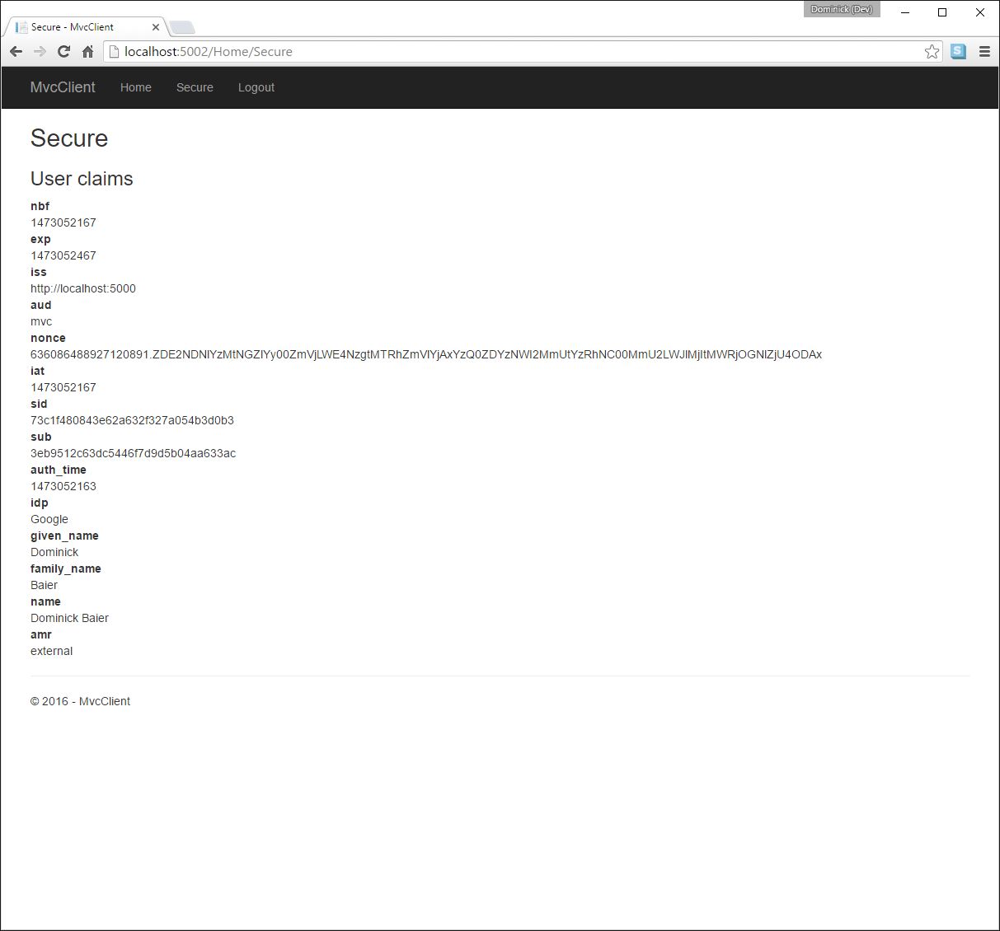

Adding Support for External Authentication¶
Next we will add support for external authentication. This is really easy, because all you really need is an ASP.NET Core compatible authentication handler.
ASP.NET Core itself ships with support for Google, Facebook, Twitter, Microsoft Account and OpenID Connect. In addition you can find implementations for many other authentication providers here.
Adding Google support¶
To be able to use Google for authentication, you first need to register with them. This is done at their developer console. Create a new project, enable the Google+ API and configure the callback address of your local IdentityServer by adding the /signin-google path to your base-address (e.g. http://localhost:5000/signin-google).
If you are running on port 5000 - you can simply use the client id/secret from the code snippet below, since this is pre-registered by us.
Start by adding the Google authentication handler to DI.
This is done by adding this snippet to ConfigureServices in Startup:
public void ConfigureServices(IServiceCollection services)
{
services.AddMvc();
// configure identity server with in-memory stores, keys, clients and scopes
services.AddIdentityServer()
.AddDeveloperSigningCredential()
.AddInMemoryIdentityResources(Config.GetIdentityResources())
.AddInMemoryApiResources(Config.GetApiResources())
.AddInMemoryClients(Config.GetClients())
.AddTestUsers(Config.GetUsers());
services.AddAuthentication()
.AddGoogle("Google", options =>
{
options.SignInScheme = IdentityServerConstants.ExternalCookieAuthenticationScheme;
options.ClientId = "434483408261-55tc8n0cs4ff1fe21ea8df2o443v2iuc.apps.googleusercontent.com";
options.ClientSecret = "3gcoTrEDPPJ0ukn_aYYT6PWo";
});
}
By default, IdentityServer configures a cookie handler specifically for the results of external authentication (with the scheme based on the constant IdentityServerConstants.ExternalCookieAuthenticationScheme).
The configuration for the Google handler is then using that cookie handler.
For a better understanding of how this is done, see the AccountController class under the Quickstart folder.
Now run the MVC client and try to authenticate - you will see a Google button on the login page:
After authentication, you can see that the claims are now being sourced from Google data.
Further experiments¶
You can add an additional external provider. We have a cloud-hosted demo version of IdentityServer4 which you can integrate using OpenID Connect.
Add the OpenId Connect handler to DI:
services.AddAuthentication()
.AddGoogle("Google", options =>
{
options.SignInScheme = IdentityServerConstants.ExternalCookieAuthenticationScheme;
options.ClientId = "434483408261-55tc8n0cs4ff1fe21ea8df2o443v2iuc.apps.googleusercontent.com";
options.ClientSecret = "3gcoTrEDPPJ0ukn_aYYT6PWo";
})
.AddOpenIdConnect("oidc", "OpenID Connect", options =>
{
options.SignInScheme = IdentityServerConstants.ExternalCookieAuthenticationScheme;
options.SignOutScheme = IdentityServerConstants.SignoutScheme;
options.Authority = "https://demo.identityserver.io/";
options.ClientId = "implicit";
options.TokenValidationParameters = new TokenValidationParameters
{
NameClaimType = "name",
RoleClaimType = "role"
};
});
And now a user should be able to use the cloud-hosted demo identity provider.
Note
The quickstart UI auto-provisions external users. As an external user logs in for the first time, a new local user is created, and all the external claims are copied over and associated with the new user. The way you deal with such a situation is completely up to you though. Maybe you want to show some sort of registration UI first. The source code for the default quickstart can be found here. The controller where auto-provisioning is executed can be found here.